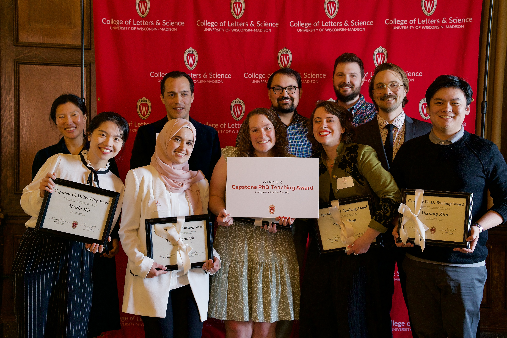

Spring 2027
PB 200 — Plant Life
An introduction to the botanical world, including plant diversity, biology, and relationships with the environment.
Plants are fundamental to life on Earth. They are diverse, dynamic, and endlessly interesting organisms with a multitude of interactions across life. Much of what draws me to botany is the opportunity to explore plants from many different angles, from their forms and morphology to patterns in their distribution, evolutionary histories, and ecological relationships. Sharing that sense of discovery and helping students learn to see the botanical world in new ways is at the center of my teaching. Especially important to me is bringing experiential learning into the classroom by combining field-based inquiry, natural history collections, and real-world research. I believe that connecting what we learn to our own backyard and daily life is also critical. My goal is to give students coming into botany from any direction, whether as beginners, from another field, or as advanced students, the tools and skills to explore plants themselves, succeed in their endeavors, and have a deeper appreciation for the botanical world around them.
Assistant Teaching Professor, Department of Plant and Microbial Biology (2026–present)
Read more about my appointment in NC State's faculty introduction.
Spring 2027
An introduction to the botanical world, including plant diversity, biology, and relationships with the environment.
Spring 2027
Plant identification, classification, and evolutionary relationships, with an emphasis on studying botanical diversity directly.
Fall 2027
Exploring the geographic distributions of plants and the ecological, evolutionary, and historical processes that shape them.
During my graduate studies in Botany, I taught a range of courses in plant biology, ecology, evolution, and field identification, both as a primary instructor and as a teaching assistant.
| Year | Course |
|---|---|
| 2025 | Evolution |
| 2024 | Midwestern Ecological Issues |
| 2023 | Vascular Flora of Wisconsin |
| Year | Courses |
|---|---|
| 2025 | General Botany |
| 2024 | General Botany (two semesters) |
| 2023 | General Botany |
| 2022 | Dendrology; Plant Morphology and Evolution |
| 2021 | Midwestern Ecological Issues; General Botany |
| 2020 | General Botany (two semesters) |
| 2019 | General Botany |
Examples from courses I developed and taught at the University of Wisconsin–Madison.
University of Wisconsin–Madison

Read the UW–Madison teaching award profile.
University of Wisconsin–Madison
Mentoring is an important part of my approach to teaching botany. I enjoy helping students develop the practical and analytical skills to investigate plants for themselves, from observing and identifying organisms in the field to working with specimens, ecological data, and scientific communication.
While working at the Wisconsin State Herbarium, I mentored undergraduate and graduate student projects associated with Students and Water in Wisconsin’s Peatland Plant Communities, a project led by Mary Ann Feist and Keir Wefferling. Students gained experience with field- and herbarium-based plant identification, plant community surveys, data analysis and presentation, and science communication and outreach. We also developed educational resources to communicate peatland ecology and plant diversity to students, educators, and the public.
Read more about Wisconsin’s peatlands project
In 2025, I participated in the Delta Research Mentor Learning Community’s Entering Mentoring program, with a focus on mentoring in botany.